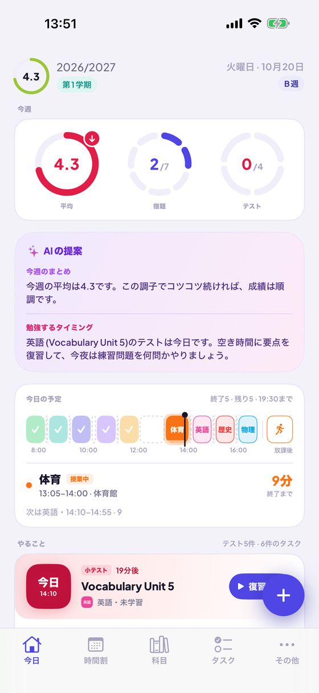
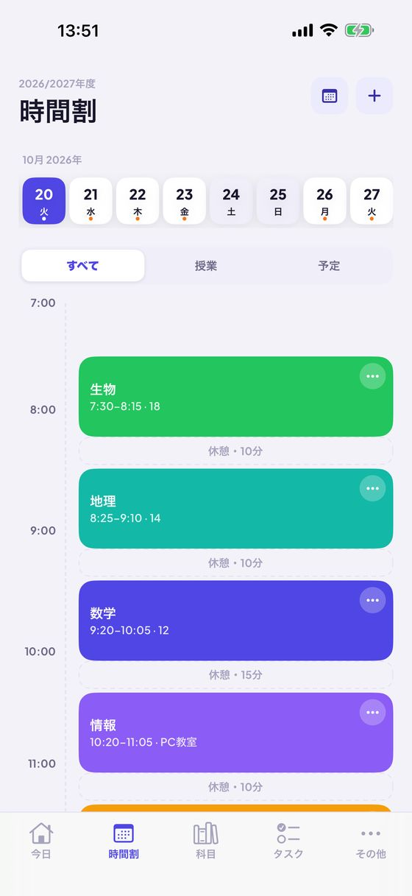
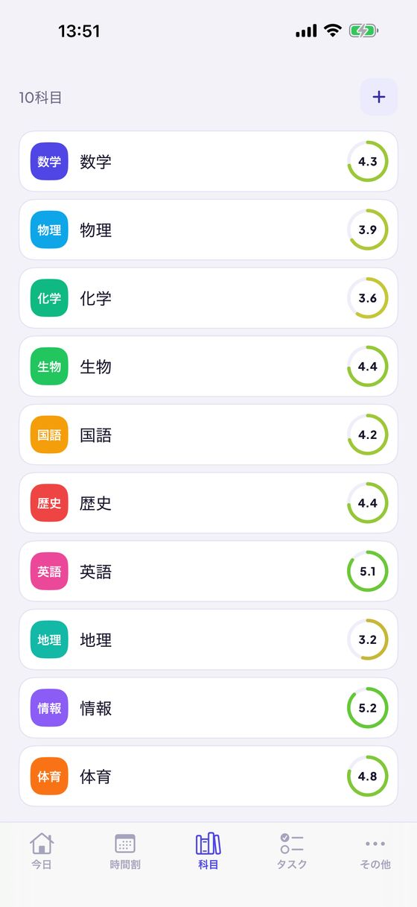
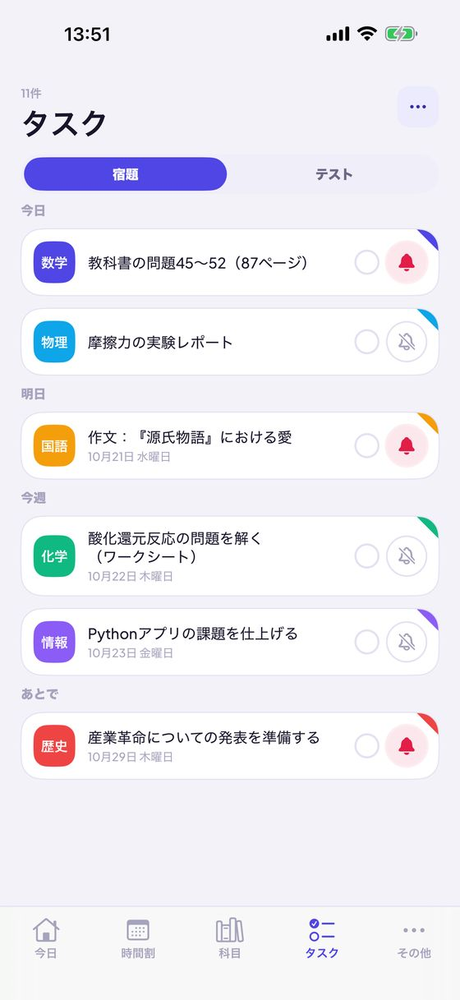
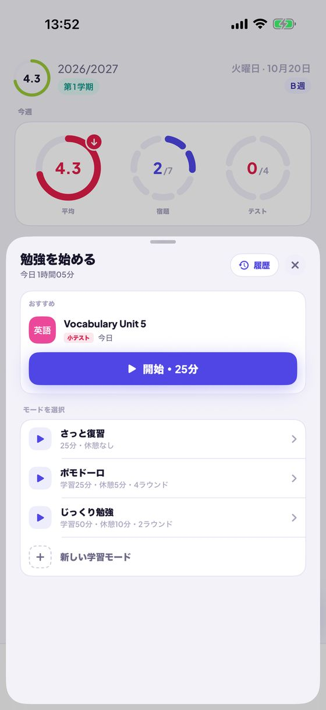
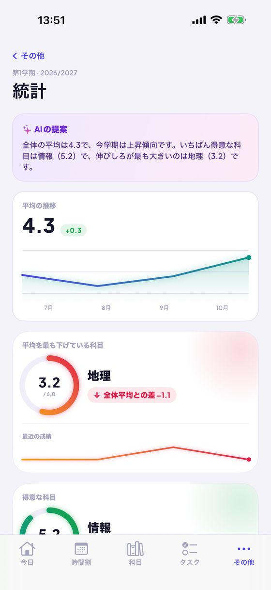
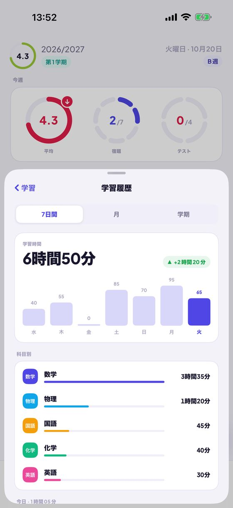
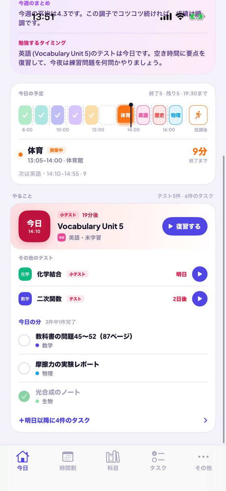
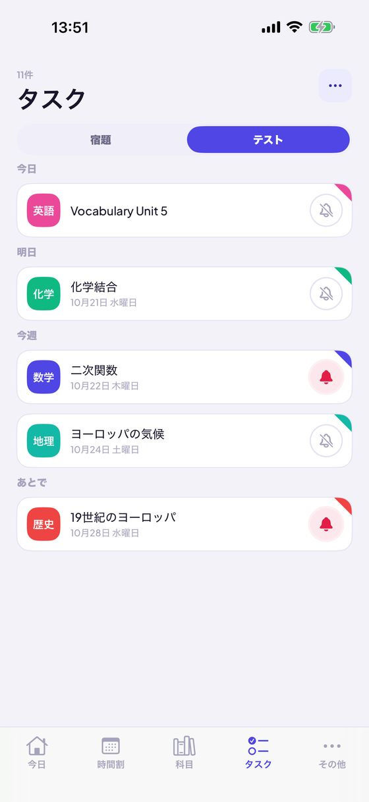
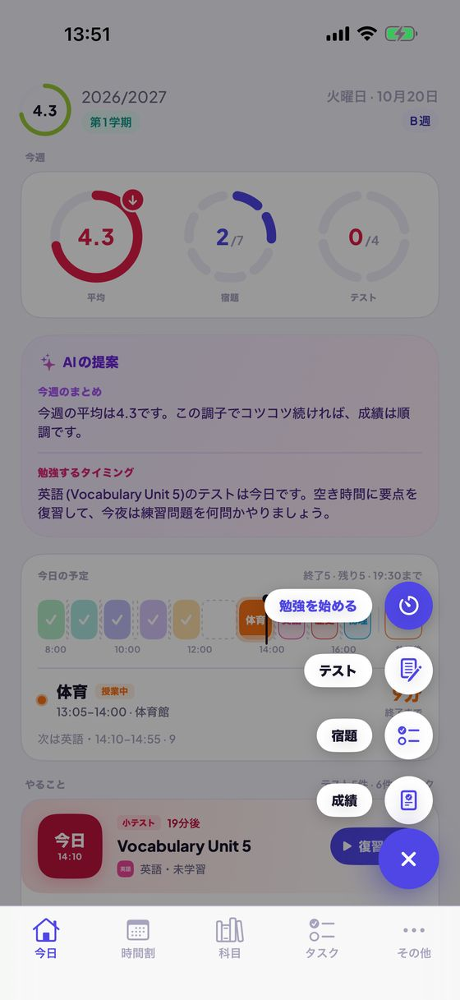

今日
一日の予定も成績も AIのヒントもひとつに
- 「今週」リング：週の平均と上昇・下降の矢印、終わった宿題とテストの数がわかります。
- 一日をタイムラインで表示：科目の色で分けた授業、休憩と空き時間、進行中の授業とその残り時間。
- 「やること」：カウントダウン付きの直近のテスト、期限切れの宿題、今日のタスクをワンタップでチェック。
- 成績、宿題、テスト、勉強セッションをすばやく追加。
Kajetは、学校にも大学にも使える学生向けプランナーです。一日の予定がひと目でわかり、平均つきの成績、リマインダー付きの宿題とテスト、ポモドーロ対応の勉強タイマーを備えています。アカウント不要、広告なし。


今日
時間割

成績と平均

宿題とテスト

学習モード

AIのヒント（オプション）
ECTS単位、最終成績、ECTS加重平均、自分で決める奨学金のしきい値と、達成に必要な成績の目安。
次の授業をホーム画面とロック画面に表示。Siriに次の授業、今日の宿題、平均をたずねたり、声で成績を追加したりできます。
アカウントも広告もなく、データはiPhoneの中だけに。オプションのAIのヒントは、Apple Intelligenceでデバイス上だけで動作します。




アプリ、ウィジェット、Siri、ショートカットは13言語に対応。Kajetはお使いのiPhoneの言語に合わせて表示します。
アカウント不要、広告なし、データはあなたの手元に。
App Storeでダウンロードポーランドの学校制度・大学制度（1〜6の成績、2.0〜5.0の大学の評価尺度、ECTS）を想定して作られていますが、どこでも使えます。iOS 17以降のiPhone向け。AIのヒントにはiOS 26とApple Intelligenceが必要です。